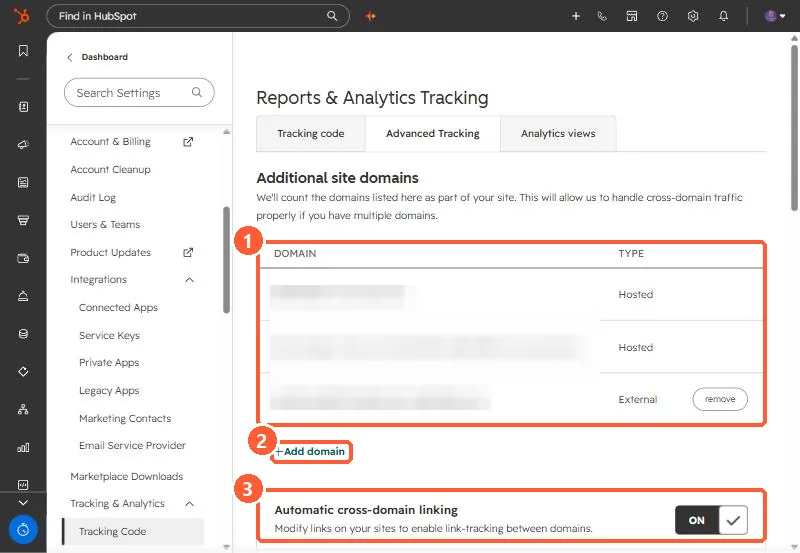

Short answer
Settings, Tracking & Analytics, Tracking Code, Advanced Tracking lists the domains HubSpot counts as your site. Add every externally hosted domain that has the tracking code or HubSpot forms. HubSpot's KB says that after May 16, 2024, submissions from forms on external pages whose domains are not added are filtered to spam. Traffic between listed domains counts as your own site, not as referrals.
1. The list
My demo portal lists its HubSpot-hosted domains and one external domain, and has automatic cross-domain linking on.


2. Why it matters
- Forms embedded on external pages of unlisted domains have their submissions filtered to spam. See form submissions marked as spam.
- Visits between listed domains are treated as one site, not referrals.
- Pages on HubSpot-connected domains already have the tracking code. Do not add it twice.
3. Check after adding
Confirm the tracking code fires on the external domain. See checking the tracking code. Also set the company domain under Account Defaults, which HubSpot uses in analytics.